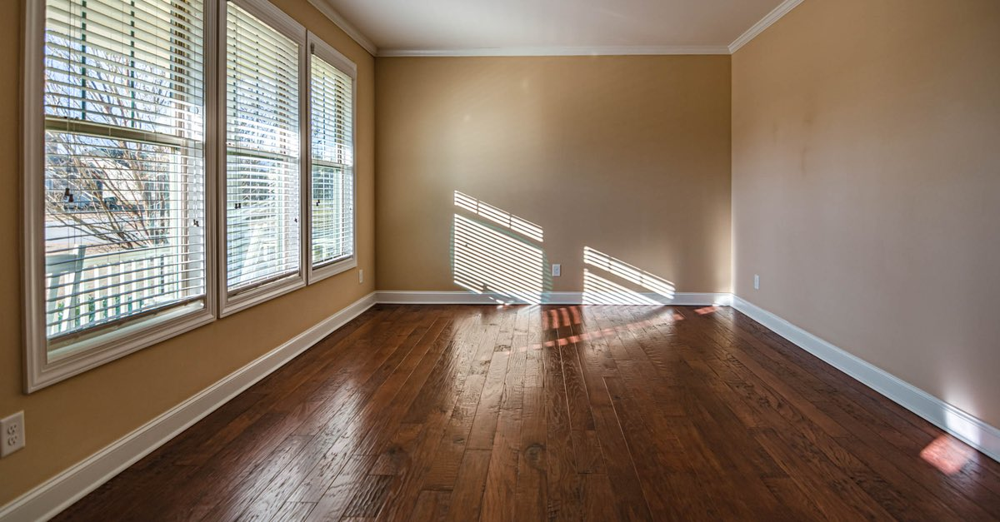
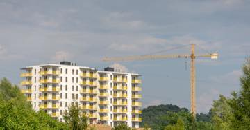

Kira yardımı ve taşınma yardımı: kim alır, ne kadar sürer?
Kira yardımının iki ayrı kaynağı var: afete özgü AFAD kararları ve kentsel dönüşüm mevzuatındaki kalıcı kira yardımı. İkincisinde kiracı da taraftır.

Kira yardımı, deprem sonrasında en çok sorulan ve en çok karıştırılan başlıktır. Karışıklığın nedeni basittir: tek bir kira yardımı yoktur, iki ayrı kaynak vardır ve kuralları farklıdır.
İki kaynak, iki farklı mantık
| Kaynak | Niteliği | Kimi kapsar |
|---|---|---|
| Kentsel dönüşüm (6306) | Kalıcı mevzuat; tutar Bakanlıkça yıllık güncellenir | Riskli yapıdaki malik ve kiracı |
| Afete özgü kararlar (AFAD) | O afet için alınmış idari karar | Karar metninde kim sayılmışsa |
Birincisi bir haktır ve mevzuatta yazılıdır. İkincisi bir karardır: her afette yeniden alınır, tutarı ve süresi değişir, hatta hiç alınmayabilir.
Bu ayrımı neden bu kadar vurguluyoruz?
Çünkü "2023'te şu kadar ödenmişti" cümlesi bir hak değil, bir emsaldir. Yeni bir afette aynı tutarın ödeneceğini kimse taahhüt edemez. Size olmayan bir hakkı varmış gibi göstermek, bilgi vermemekten daha zararlıdır.
Kentsel dönüşümde kira yardımı: kiracı da taraftır
Riskli yapı tespiti yapılmış bir binada oturuyorsanız, süreç yalnızca maliki değil kiracıyı da ilgilendirir. Kiracıların da kira yardımı talep edebildiği, sürenin 18 aya kadar uzayabildiği ve tutarın Bakanlıkça yıllık güncellendiği belirtilmektedir. Kiracılara, maliklere yapılan aylık yardımın iki katı tutarında bir defaya mahsus ödeme yapıldığı ifade edilmektedir.
Riskli yapı sürecinin nasıl başladığı ve itiraz basamakları için: riskli yapı tespiti.
Afete özgü yardımlar: 2023'te ne uygulanmıştı?
2023 depremlerinde AFAD eliyle yürütülen uygulamada ev sahibi ve kiracı için ayrı aylık kira yardımı tutarları ile bir defalık taşınma yardımı belirlenmiştir:
| Kalem | Tutar | Süre |
|---|---|---|
| Kira yardımı — ev sahibi | 5.000 TL / ay | 12 ay |
| Kira yardımı — kiracı | 3.000 TL / ay | 12 ay |
| Taşınma yardımı | 15.000 TL | bir defalık |
Yukarıdaki tablo geçmiş uygulamadır, güncel hak değildir. Tutarlar o afete özgü kararla belirlenmiştir ve doğrulama durumu "tek kaynak" düzeyindedir. Kendi durumunuz için AFAD'ın ve valiliğin o afete ilişkin güncel duyurusunu esas alın.
Başvuruda dikkat edilecek beş şey
- Hangi kaynağa başvurduğunuzu bilin. Kentsel dönüşüm yardımı ile afet yardımı ayrı dosyalardır; muhatap kurum da farklıdır.
- Kira sözleşmesi ve ödeme kaydı. Kiracının en büyük sorunu ispattır; sözleşme yoksa dekont, mesaj ve tanık toplayın.
- Adres kaydı. Yardımlar çoğu zaman hasar gören adreste oturuyor olmaya bağlanır; adres değişikliğini yaptıysanız tarihini not edin.
- Evrak kaydı alın. Sözlü başvurunun ispatı yoktur.
- Mükerrerliği sorun. Aynı hane için birden çok yardım alınıp alınamayacağını yazılı olarak sorun; sonradan geri istenmesi, alınmamasından daha kötüdür.
Yardım kesildiyse veya reddedildiyse
Reddin veya kesmenin gerekçesini yazılı isteyin. İdari işlem niteliğindeki bu kararlara karşı önce idareye başvuru, sonra idari yargı yolu açıktır. Cevap gelmezse otuz günün sonunda ret sayılır ve dava süresi işlemeye başlar — ayrıntısı: idare ve yapı denetiminin sorumluluğu.
Kanuni dayanak
| Mevzuat | Ne diyor |
|---|---|
| 6306 sayılı Afet Riski Altındaki Alanların Dönüştürülmesi Hakkında Kanun | Riskli yapı sürecinde malik ve kiracılara kira yardımı yapılabilmesinin dayanağıdır. |
| 6306 sayılı Kanunun Uygulama Yönetmeliği | Kira yardımının süresini, tutarının güncellenmesini ve başvuru usulünü belirler. |
| 7269 sayılı Umumi Hayata Müessir Afetler Kanunu | Afet sonrası geçici barınma ve yardım uygulamalarının genel çerçevesini kurar. |
Sık sorulanlar
Kiracı kira yardımı alabilir mi?
Riskli yapı sürecinde kiracıların da Bakanlıktan kira yardımı talep edebildiği belirtilmektedir; kiracılara maliklere yapılan aylık yardımın iki katı tutarında bir defaya mahsus ödeme yapıldığı ifade edilmektedir. Afete özgü AFAD kararlarında ise kiracı için ayrı ve genellikle daha düşük bir tutar belirlenir.
Kira yardımı ne kadar süre ödenir?
Kentsel dönüşüm kapsamında sürenin 18 aya kadar uzayabildiği belirtilmektedir. Afete özgü kararlarda süre, o afet için ayrıca belirlenir; 2023'te ev sahipleri ve kiracılar için 12 ay uygulanmıştır.
Tutarlar neden her yerde farklı yazıyor?
Çünkü iki ayrı kaynak var: kentsel dönüşüm kira yardımı Bakanlıkça yıllık güncellenir, afet kararlarındaki tutar ise o afete özgüdür. Bu sayfada tutar yazmak yerine hangi kaynaktan hangi tutarın geldiğini gösteriyoruz.
Hem kira yardımı hem afet konutu alabilir miyim?
Aynı anda birden çok yardımdan yararlanma, mükerrer ödeme kurallarıyla sınırlanır. Hak sahipliği başvurunuz varsa hangi yardımın kesileceğini başvuru sırasında yazılı olarak sorun.
Başvuruyu nereye yaparım?
Afete özgü yardımlarda AFAD ve valilik/kaymakamlık; kentsel dönüşüm kira yardımında Çevre, Şehircilik ve İklim Değişikliği İl Müdürlüğü muhataptır. Her iki hâlde de başvurunun evrak kaydını almanız gerekir.
Bu konuyla ilgili araç
Hak taramaMalik mi kiracı mısınız? Size açık destek başlıklarını görün.İlgili rehberler
 Devlet destekleri
Hak sahipliği başvurusu: iki aylık süre, taahhütname ve faizsiz borçlandırma
Binası yıkılan veya ağır hasarlı malikler devletten konut ya da faizsiz kredi isteyebilir. Başvuru süresi ilan tarihinden itibaren iki aydır.
Devlet destekleri
Hak sahipliği başvurusu: iki aylık süre, taahhütname ve faizsiz borçlandırma
Binası yıkılan veya ağır hasarlı malikler devletten konut ya da faizsiz kredi isteyebilir. Başvuru süresi ilan tarihinden itibaren iki aydır.

Devlet destekleri Afet konutu bedava değildir: borçlandırma koşullarını başvurmadan önce bilin Hak sahipliği kabul edilen kişiye verilen konut karşılıksız değildir. Geri ödeme en az 20 yıl, faizsiz ve eşit taksitlidir; ilk taksit teslimden iki yıl sonra başlar. Kira ve mülkiyet
Kiracının deprem hakları: tazminat davası için tapu sahibi olmanız gerekmez
DASK malike öder, hak sahipliği tapu arar, afet konutu malike verilir. Ama tazminat davasında mülkiyet şartı yoktur — kiracının en güçlü hakkı budur.
Kira ve mülkiyet
Kiracının deprem hakları: tazminat davası için tapu sahibi olmanız gerekmez
DASK malike öder, hak sahipliği tapu arar, afet konutu malike verilir. Ama tazminat davasında mülkiyet şartı yoktur — kiracının en güçlü hakkı budur.
 Deprem öncesi yapı güvenliği
Riskli yapı tespiti nasıl yaptırılır? Komşularınızın onayı gerekmiyor
Riskli yapı tespiti için diğer maliklerin onayı gerekmez. Tek bir kat maliki, masrafı kendisine ait olmak üzere tüm binanın tespitini yaptırabilir.
Deprem öncesi yapı güvenliği
Riskli yapı tespiti nasıl yaptırılır? Komşularınızın onayı gerekmiyor
Riskli yapı tespiti için diğer maliklerin onayı gerekmez. Tek bir kat maliki, masrafı kendisine ait olmak üzere tüm binanın tespitini yaptırabilir.